“Ăn Huế” không chỉ để no, mà để thưởng thức cái tinh tế, trầm mặc và đầy triết lý của một vùng đất từng là kinh đô.
Không chỉ nổi tiếng với những lăng tẩm cổ kính, dòng Hương Giang thơ mộng và câu hò mái đẩy ngọt ngào, Huế còn được mệnh danh là kinh đô ẩm thực của Việt Nam. Ẩm thực Huế là sự giao thoa hoàn hảo giữa cung đình xa hoa và dân gian mộc mạc. Ẩm thực Huế hiện lên như một bản hòa ca tinh tế của hương và sắc, nơi mỗi món ăn không chỉ để thưởng thức mà còn để chiêm nghiệm vẻ đẹp văn hóa cố đô Huế. Từ những món cung đình cầu kỳ, thanh nhã đến những món dân dã giản dị mà đậm đà, tất cả đều mang trong mình nét dịu dàng, sâu lắng rất riêng của xứ Huế.
Khác với ẩm thực miền Bắc (nhẹ nhàng, hài hòa) hay miền Nam (ngọt đậm, nhiều dừa), ẩm thực Huế mang một “chất Huế” khó lẫn: công phu, tỉ mỉ, và giàu tầng lớp – mỗi món ăn không chỉ ngon mà còn đẹp mắt, kể một câu chuyện riêng. Trong hành trình này, chúng ta sẽ cùng khám phá từng món ăn biểu tượng, đi sâu vào nguyên liệu, cách thưởng thức, và cả những giá trị văn hóa ẩn sau mỗi món.
Bún bò Huế – món ăn biểu tượng vang danh cả nước. Khác với bún bò các vùng miền khác, bún bò Huế có vị cay nồng đặc trưng từ sả, ớt và mắm ruốc. Nước dùng được ninh từ xương bò, chân giò, thêm chút sa tế tạo màu đỏ hấp dẫn. Sợi bún to, dai; bò tái, bò nạm, giò heo, chả cua… hòa quyện cùng rau muống bào, bắp chuối, giá đỗ. Tất cả tạo nên một tô bún thơm lừng, cay nồng, ăn một lần nhớ mãi.
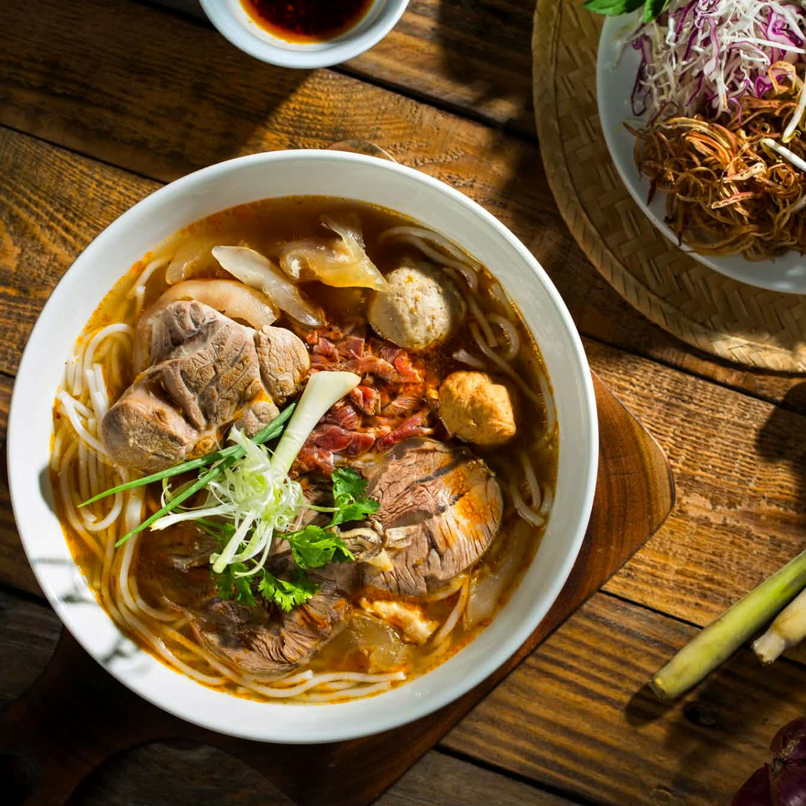
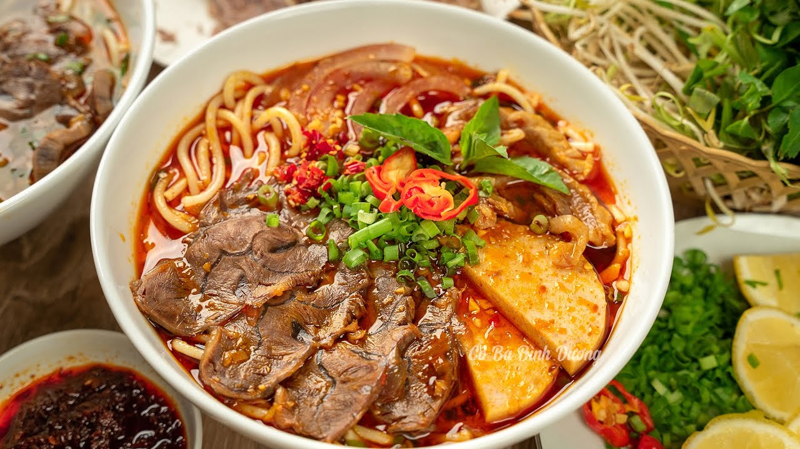
Nếu bún bò là món “quốc dân” thì cơm hến lại mang vẻ đẹp bình dị, gần gũi. Nguyên liệu chính là hến (loại hến nhỏ ở sông Hương), được xào với gia vị, ăn cùng cơm nguội, rau sống, tóp mỡ, lạc rang, hành phi, ớt… Tất cả trộn đều lên, thêm một chút nước mắm ruốc pha chua ngọt. Cơm hến không cầu kỳ nhưng lại khiến thực khách nhớ mãi vì sự hòa quyện giữa vị ngọt thanh của hến, béo của lạc và giòn của tóp mỡ.
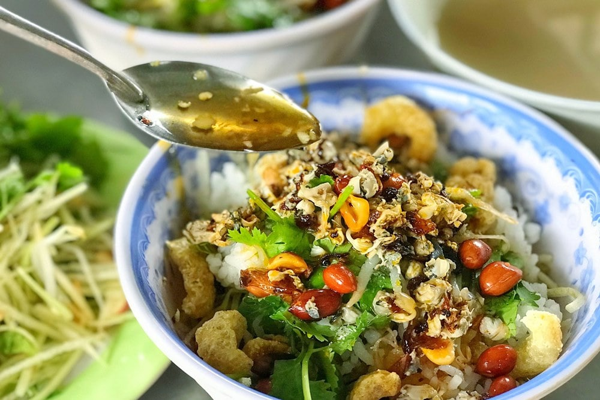
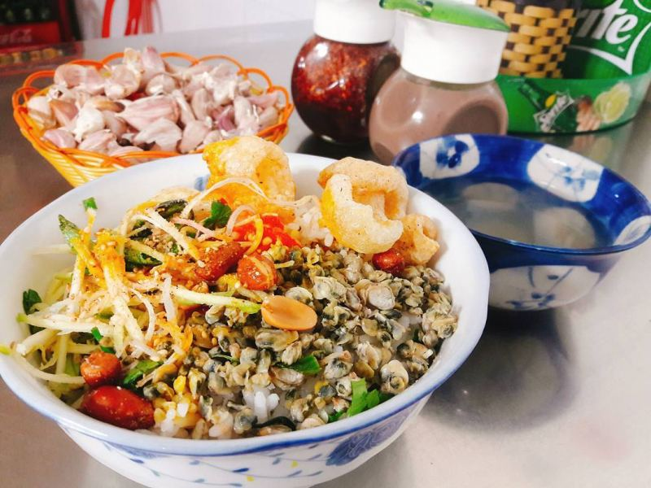
Huế có lẽ là nơi có nhiều loại bánh nhất Việt Nam. Mỗi loại bánh đòi hỏi sự khéo léo và tỉ mỉ của người làm. Dưới đây là top 6 loại bánh nhất định phải thử: Bánh bèo, bánh nậm, bánh bột lọc, bánh ram ít,bánh khoái, bánh ướt thịt nước. Mỗi loại đều đòi hỏi kỹ thuật riêng và tâm huyết của người làm.
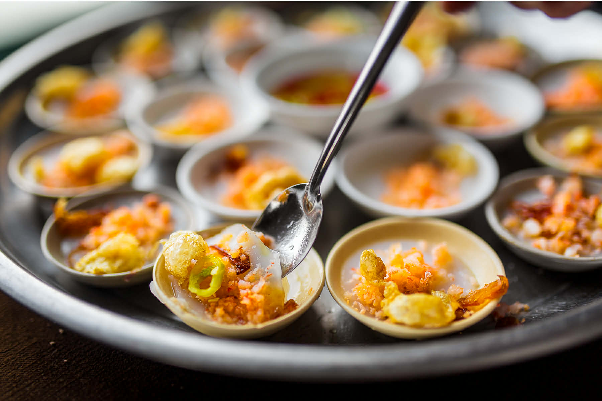
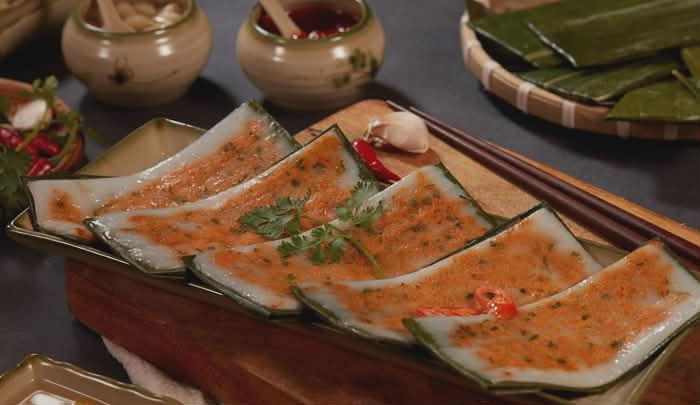
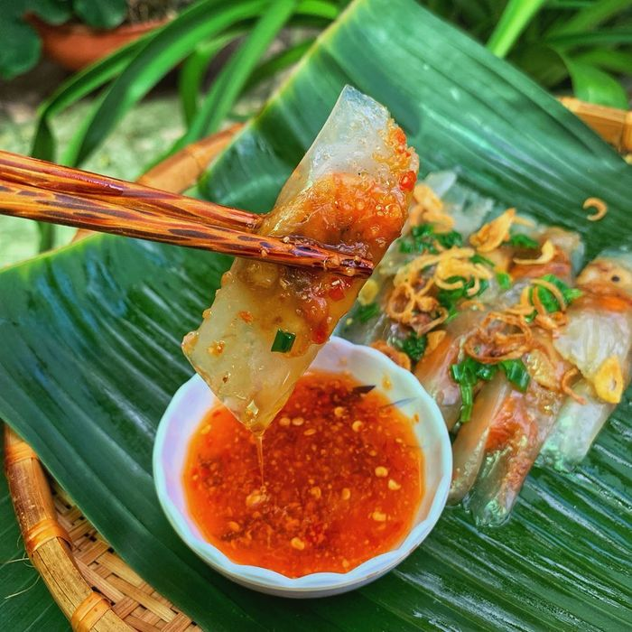
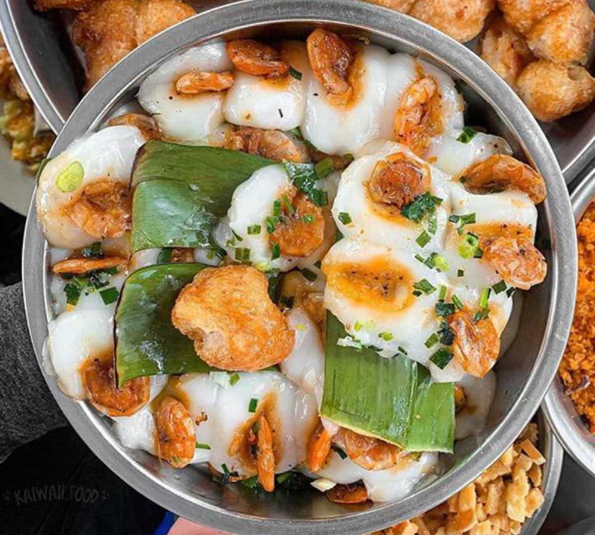
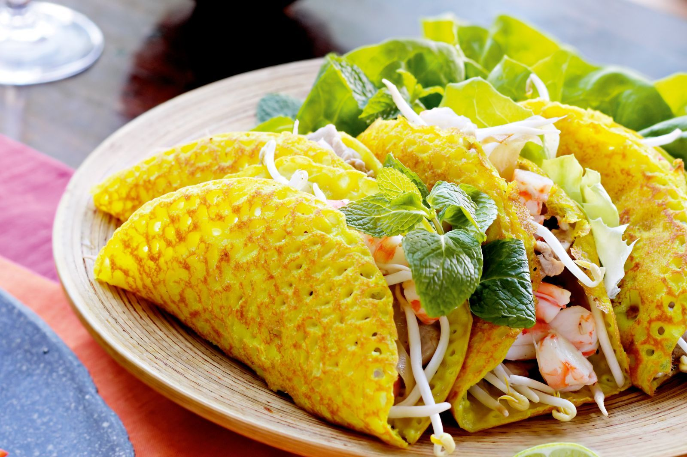
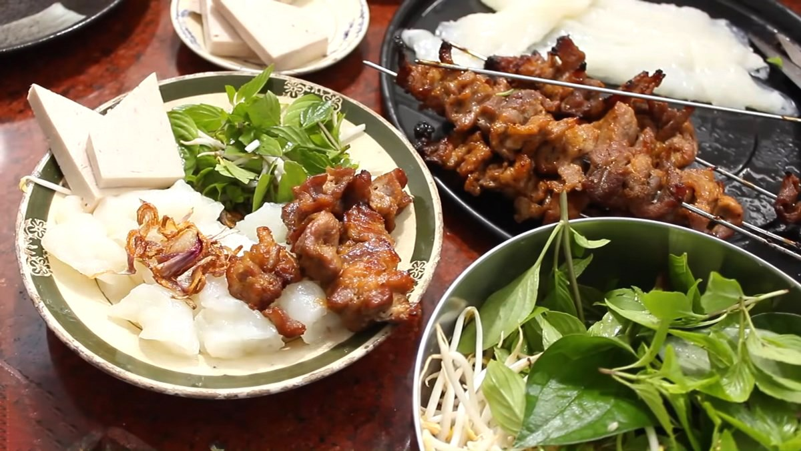
Người Huế có câu: “Chè Huế nhiều vô kể, kể mãi không hết”. Thật vậy, chè ở Huế đa dạng từ màu sắc đến hương vị, nhưng đều có điểm chung: không quá ngọt, vị thanh tao, thường ăn với nước cốt dừa béo ngậy.
Chè heo quay Huế là một trong những đặc sản Huế được xem là biểu tượng ẩm thực độc đáo của vùng Cố đô. Món ăn này chinh phục thực khách bằng sự kết hợp tưởng chừng không thể của chè ngọt và thịt quay mặn tạo nên hương vị khó quên. Chè bột lọc heo quay Huế gồm những viên bột lọc mỏng bọc nhân thịt heo quay, với quy trình chế biến đòi hỏi sự tài trí và khéo léo của người nấu. Bột lọc được nhào mịn và dẻo, thịt quay thái nhỏ và rim chung với gia vị tạo mùi thơm đặc trưng.
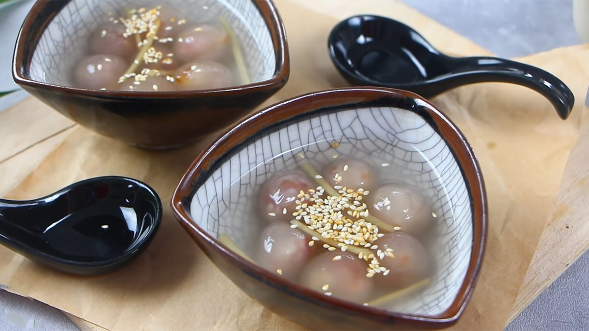
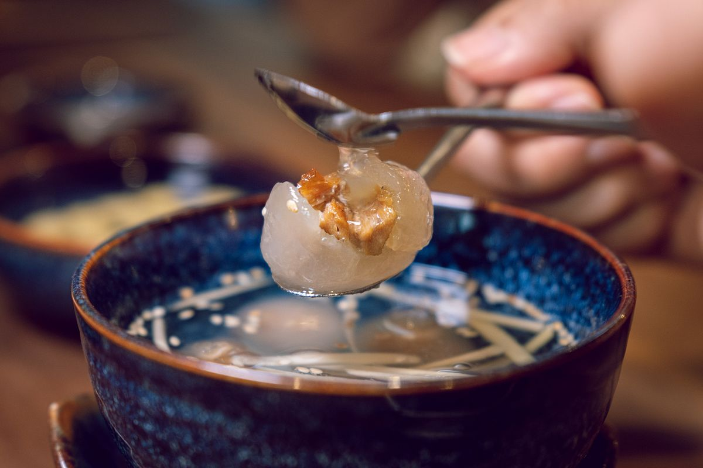
Chè Sen Huế là món ăn truyền thống nổi tiếng, mang đậm hương vị thanh tao, nhẹ nhàng của xứ Cố đô. Với nguyên liệu chính là hạt sen tươi, chè sen Huế không chỉ là món ăn thơm ngon mà còn chứa đựng giá trị văn hóa sâu sắc của Huế. Món chè này được chế biến từ những hạt sen mẩy, được thu hoạch từ hồ Tịnh Tâm, nổi tiếng ở Huế, nơi có những bông sen trắng thuần khiết, thơm ngát.
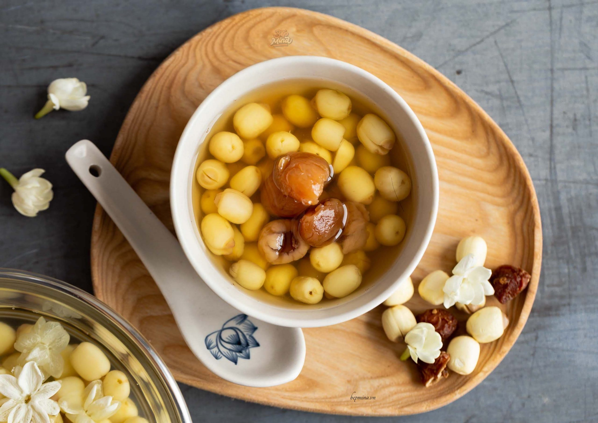
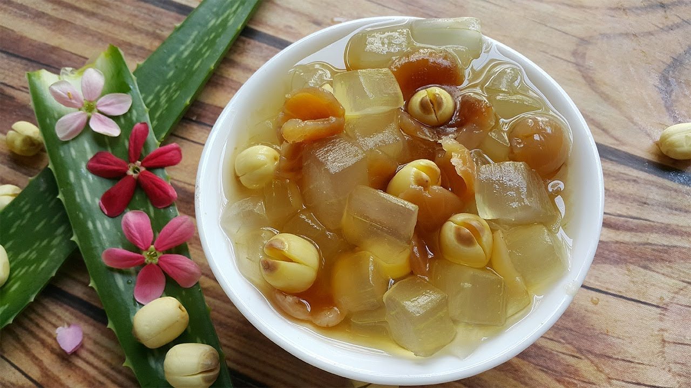
Nhắc đến ẩm thực Huế, người ta thường nghĩ ngay đến những món ăn tinh tế, thanh nhã và đậm chất truyền thống. Bên cạnh bún bò Huế, bánh bèo, bánh nậm…, chè trôi nước Huế là món chè dân dã nhưng mang giá trị văn hóa sâu sắc, gắn liền với đời sống tinh thần của người dân Cố đô từ bao đời nay.
Không quá cầu kỳ về nguyên liệu, chè trôi nước Huế chinh phục thực khách bởi hương vị hài hòa, vị ngọt thanh, béo nhẹ, ấm nồng và cảm giác an yên rất riêng khi thưởng thức.
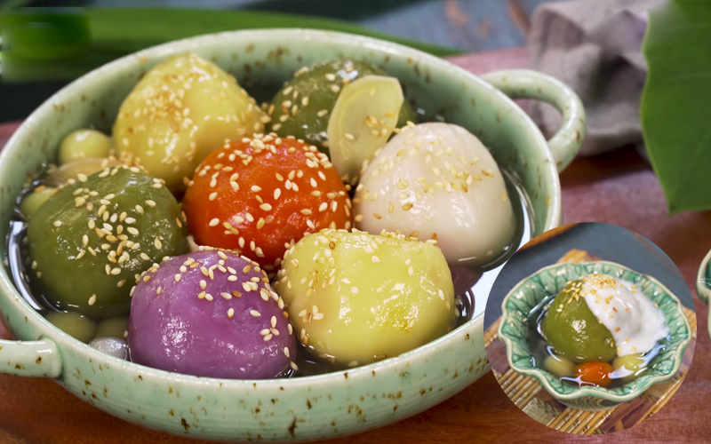
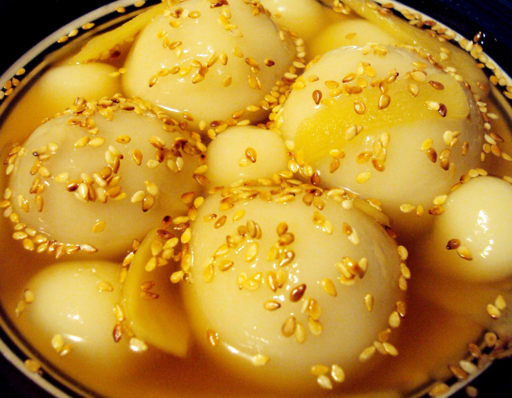
Nem công chả phượng tượng trưng của sự sự tao nhã trong ẩm thực cung đình Huế. Món ăn được trang trí từ nhiều màu sắc khác nhau và làm theo hình dáng của chim công và chim phượng.
Thời Vua chúa, món ăn vương giả này truyền từ cung đình nội phủ lan tỏa đến các bếp của các quan lại, dân giàu có ở kinh đô. Món ăn này còn thể hiện nét văn hóa ẩm thực của dân tộc Việt Nam từ xa xưa đã được gìn giữ qua bao thế hệ.
Có thể bạn chưa biết, thịt công có tính giải độc. Khi hấp thụ vào máu có khả năng giải độc tố. Đây là yếu tố quan trọng nhất để hiểu vì sao nem công lại là món ăn quý.
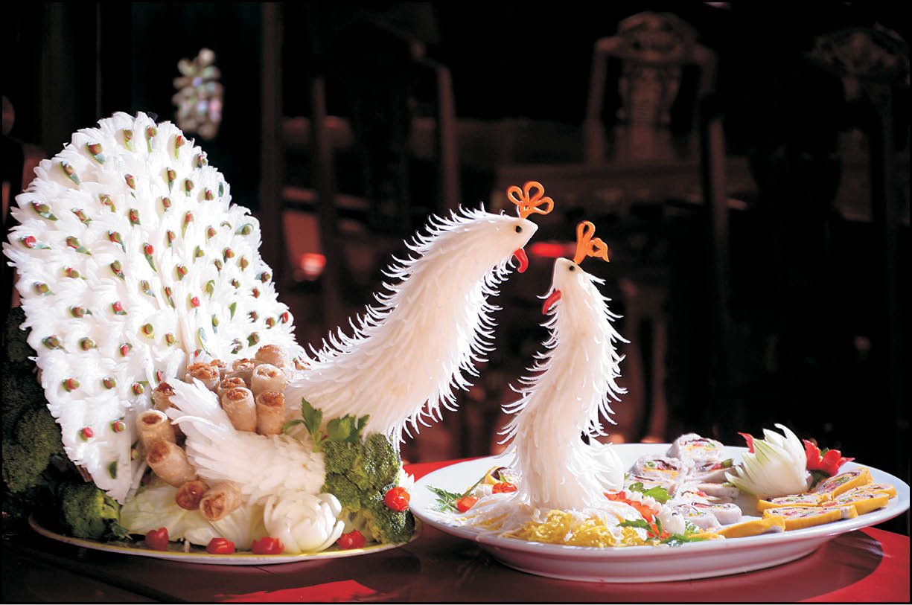
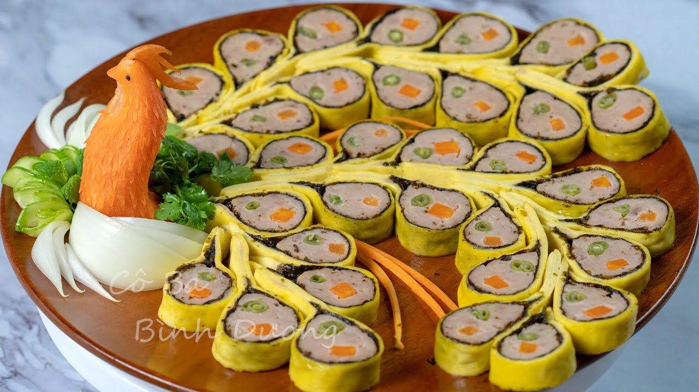
Cơm sen cung đình Huế vốn bắt nguồn từ hoàng cung triều Nguyễn, khi các bậc vua chúa thường dùng cơm ủ trong búp sen để thưởng thức vị thanh mát, tinh khiết của đất trời. Không chỉ đơn thuần là món ăn, cơm sen còn thể hiện sự khéo léo, cầu kỳ và tinh tế của người chế biến. Mỗi hạt gạo được gói ghém trong hương sen nhẹ nhàng, kết hợp với nhiều nguyên liệu phong phú, tạo nên dư vị thanh tao, trang nhã rất riêng.
Món ăn được nấu từ gạo thơm làng An Cựu, kết hợp cùng trứng rán, giò lụa, tôm, thịt gà và rau. Tất cả nguyên liệu được gói trong lá sen, hòa quyện với hương thơm nhẹ nhàng đặc trưng của hoa sen.
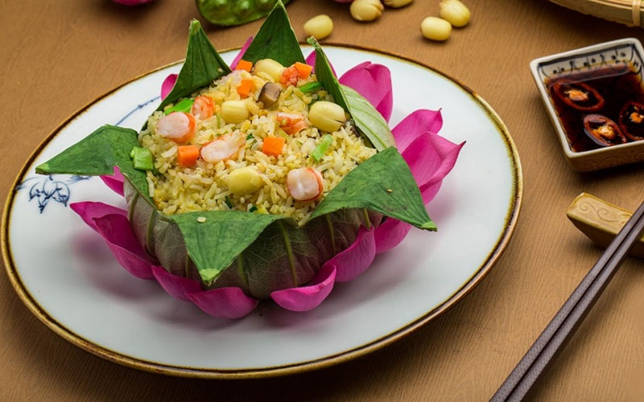
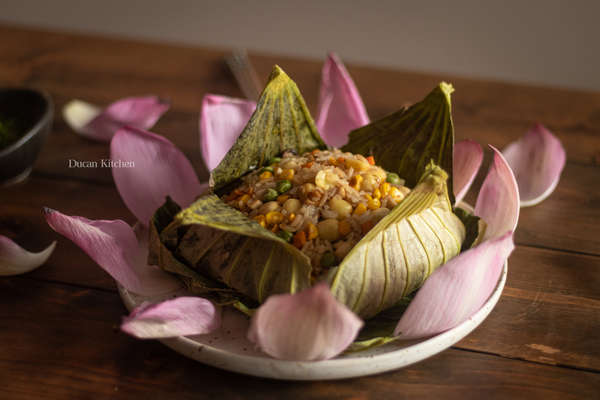
Yến sào được xếp vào nhóm món ăn cao quý bậc nhất trong ẩm thực cung đình Huế và thường được gọi là “vàng trắng”. Bên cạnh giàu giá trị dinh dưỡng, yến sào còn được xem như thực phẩm giúp tăng cường sức khỏe, hỗ trợ làm đẹp và kéo dài tuổi thọ.
Nguyên liệu này thường được chế biến thành chè, súp hoặc các món hầm. Khi dùng, yến có độ dai nhẹ, hơi giòn và mang cảm giác thanh mát. Vị của yến dịu, không gắt, thường được kết hợp với đường phèn hoặc trái cây để tạo vị ngọt nhẹ và dễ thưởng thức.
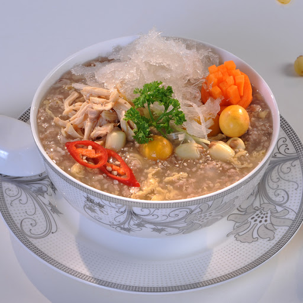
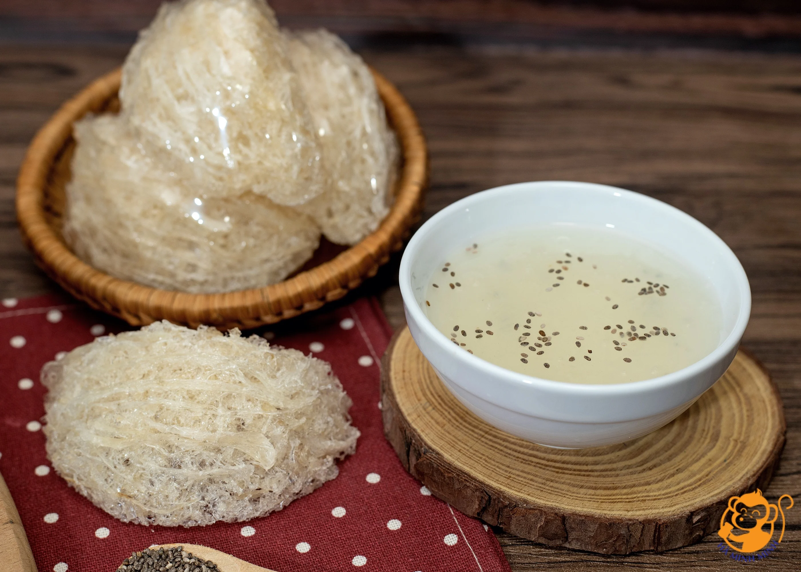
Ẩm thực Huế từ lâu đã gắn liền với mắm thứ gia vị dân dã nhưng chứa đựng cả chiều sâu văn hóa của vùng đất Cố đô. Xuất phát từ nhu cầu bảo quản thực phẩm trong khí hậu nóng ẩm, mắm dần trở thành món ăn không thể thiếu trong đời sống thường nhật và cả trong các nghi lễ, cúng giỗ của người dân. Điều làm nên sự đặc sắc của mắm Huế chính là sự hòa quyện giữa thiên nhiên và bàn tay con người. Cá từ phá Tam Giang, tôm từ biển Thuận An, cùng riềng, ớt, thính tất cả tạo nên hương vị vừa mặn mòi, vừa chua cay, cân bằng âm dương theo triết lý Á Đông.
Trong kho tàng ẩm thực cố đô, mắm tôm chua Huế được xem là linh hồn của bữa cơm dân dã. Mắm được làm từ tôm đất tươi, trộn cùng riềng, tỏi, ớt và cơm nguội lên men, tạo nên vị chua thanh, cay nồng, ngọt dịu hòa quyện độc đáo. Người Huế thường ăn mắm tôm chua kèm thịt luộc, rau sống hoặc bánh tráng, chỉ cần một chén nhỏ cũng đủ làm bữa cơm trở nên hấp dẫn.
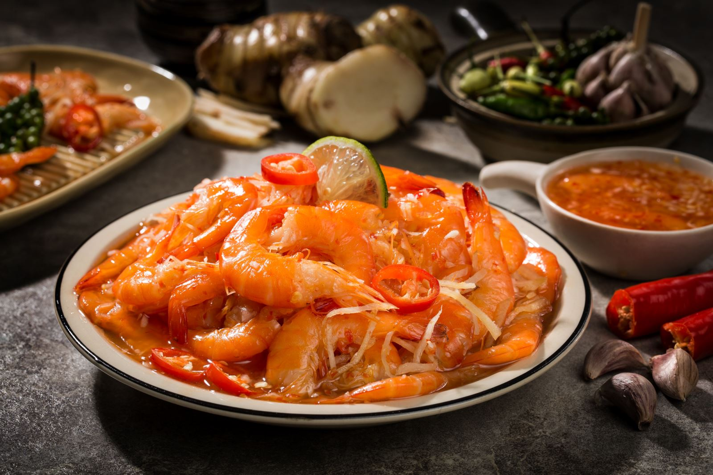
Mắm cá rò Huế là một trong những món mắm đặc sản độc đáo, nổi tiếng bởi cá nguyên con nhỏ nhắn, thịt mềm ngọt, vị mặn cay hòa quyện. Điều đặc biệt là cá rò chỉ có theo mùa, thường từ tháng 3 đến tháng 4, khiến món mắm này trở nên quý hiếm và được người Huế nâng niu gìn giữ. Nguyên liệu chính là cá rò tươi đánh bắt từ biển Thuận An, kết hợp cùng thính, cơm nguội, muối, ớt và đường.
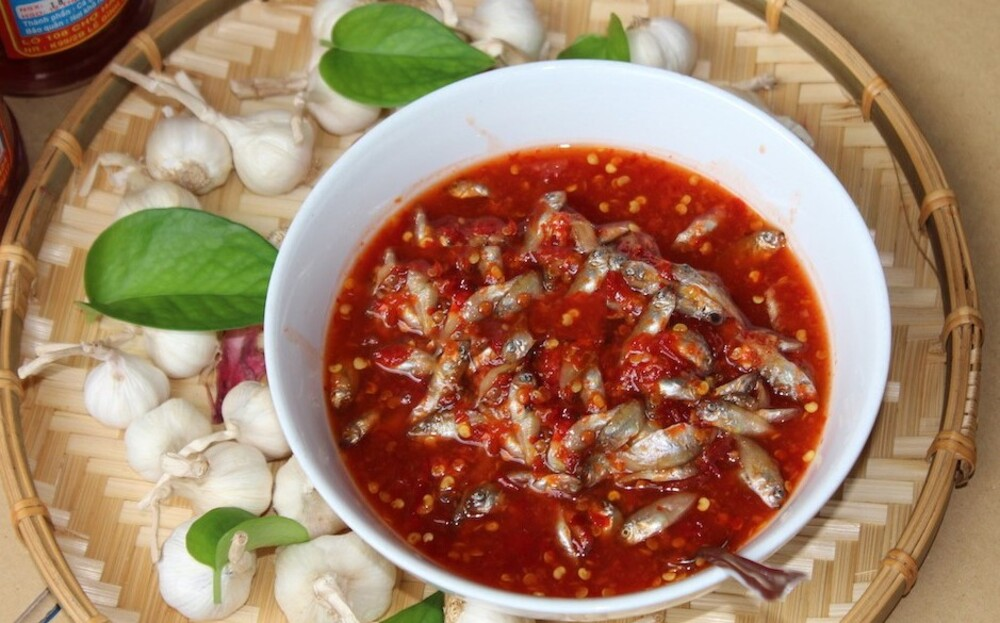
Mắm cá cơm, hay còn gọi là mắm cái, là một trong những loại mắm cơ bản và phổ biến nhất trong ẩm thực Huế. Với hương thơm quyến rũ, cá nguyên con nhỏ nhắn, mắm thường được làm từ cá cơm đánh bắt theo mùa, rộ nhất từ tháng 3 đến tháng 8 âm lịch. Nguyên liệu chính gồm cá cơm tươi, muối, cơm nguội phơi khô, thính, tỏi, ớt và đường. Cá được trộn muối theo tỷ lệ 5:1 hoặc 7:1 tùy khẩu vị, sau đó kết hợp với cơm và thính rồi đem ủ nắng trong lọ kính cho đến khi lên men, tỏa hương thơm nồng nàn đặc trưng.
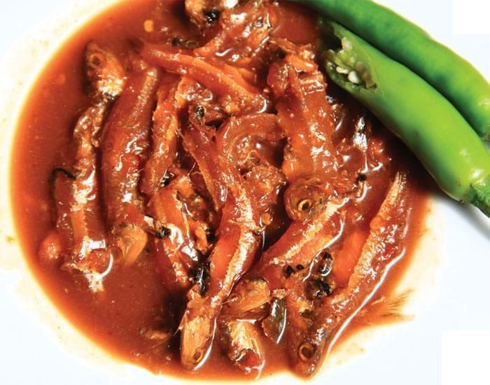